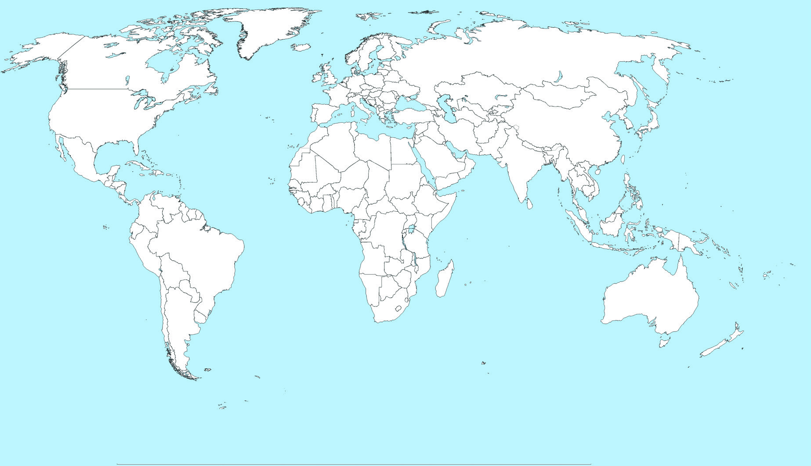
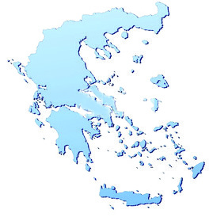
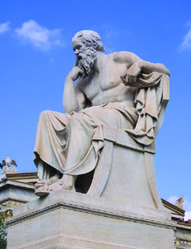
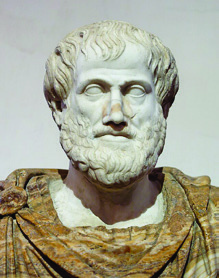
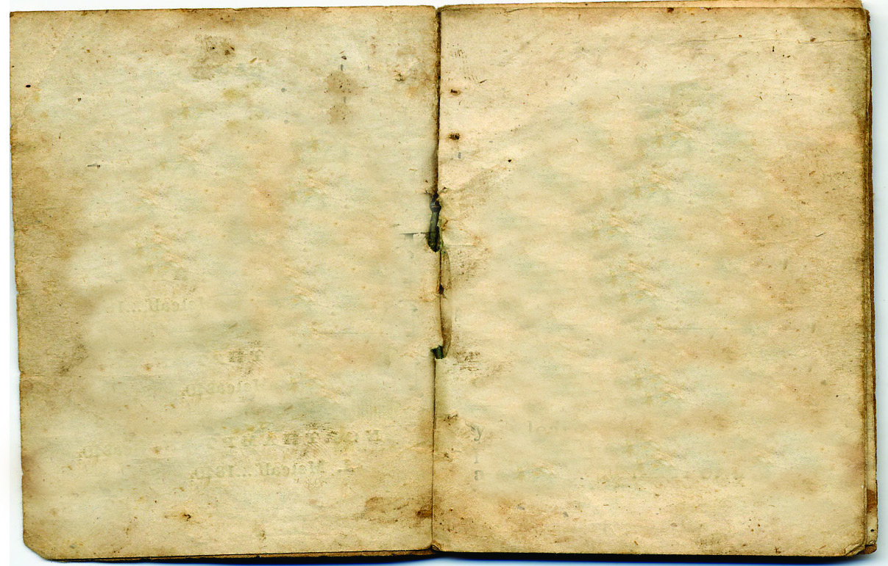
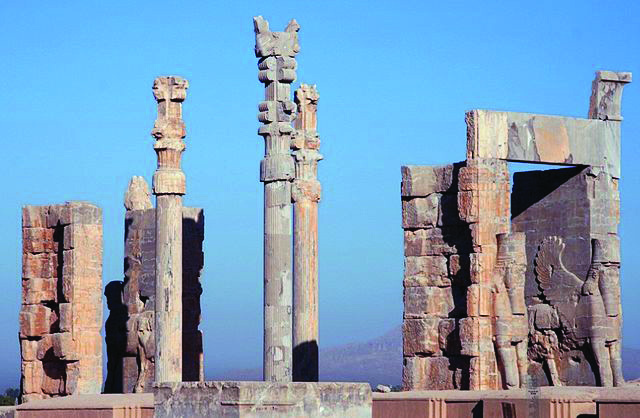
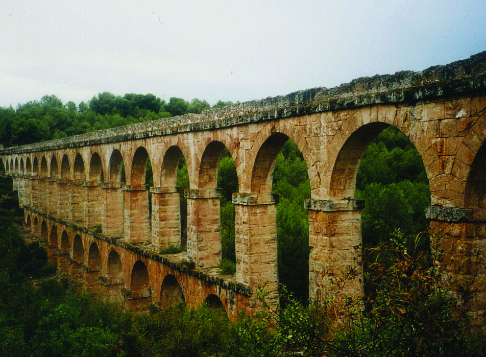

വളരെെ സന്തോŦോഷത്തിിലാാണ്് തിിങ്കൾമേട്് സർക്കാാർ വിദ്യാDzാലയത്തിിലെ� കുുട്ടിികൾ. സാംസ്കാാരിക
വിനിിമയ പരിപാാടിയുടെെ മലയാാള പരിഭാാഷയിലുളള സംപ്രേƂഷണം കാാണാാൻ എല്ലാാവരും�ം
കോ�ോൺഫറൻസ് ഹാാളിൽ എത്തിിയിട്ടുണ്ട്്.
ഹെ�ഡ്്മാാസ്റ്റർ സംസാാരിച്ചുു തുടങ്ങിി.
ഗ്രീീസ്്
ഗ്രീീസ്്
ഇറാാൻ
ഇറ്റലിി
ഇന്ത്യയ
"പ്രിയപ്പെെƀട്ട കുുട്ടിികളേ�,
"പ്രിയപ്പെെƀട്ട കുുട്ടിികളേ�,
സാംസ്കാാരിക വിനിിമയ പരിപാാടിയെ�പ്പറ്റിി നിിങ്ങൾ കേ�ട്ടിിട്ടുണ്ടോ�ോ? വിവിധ രാാജ്യയങ്ങളുുടെെയുംം�
സാംസ്കാാരിക വിനിിമയ പരിപാാടിയെ�പ്പറ്റിി നിിങ്ങൾ കേ�ട്ടിിട്ടുണ്ടോ�ോ? വിവിധ രാാജ്യയങ്ങളുുടെെയുംം�
പ്രദേ�ശങ്ങളുുടെെയുംം� ചരിത്രവുംം� സംസ്കാാരവുംം� പരസ്പരം മനസ്സിിലാാക്കുുന്നതിിന് സഹാായിക്കു
പ്രദേ�ശങ്ങളുുടെെയുംം� ചരിത്രവുംം� സംസ്കാാരവുംം� പരസ്പരം മനസ്സിിലാാക്കുുന്നതിിന് സഹാായിക്കു
ന്നതാാണ്് സാംസ്കാാരിക വിനിിമയ പരിപാാടികൾ. വിവിധ രാാജ്യയങ്ങളിിലെ� വിദ്യാDzാർഥിി പ്രതിിനിി
ന്നതാാണ്് സാംസ്കാാരിക വിനിിമയ പരിപാാടികൾ. വിവിധ രാാജ്യയങ്ങളിിലെ� വിദ്യാDzാർഥിി പ്രതിിനിി
ധികളെ� പങ്കെ�ടുുപ്പിച്ചുുകൊ�ൊണ്ട്് എല്ലാാ വർഷവുംം� ഇത്തരംം സാംസ്കാാരിക വിനിിമയ പരിപാാ
ധികളെ� പങ്കെ�ടുുപ്പിച്ചുുകൊ�ൊണ്ട്് എല്ലാാ വർഷവുംം� ഇത്തരംം സാംസ്കാാരിക വിനിിമയ പരിപാാ
ടികൾ സംഘടിപ്പിക്കാാറുണ്ട്്. ഈ വർഷം ഗ്രീീസ്, ഇറാാൻ, ഇറ്റലിി എന്നീ രാാജ്യയങ്ങളിിൽ നിിന്നുള്ള
ടികൾ സംഘടിപ്പിക്കാാറുണ്ട്്. ഈ വർഷം ഗ്രീീസ്, ഇറാാൻ, ഇറ്റലിി എന്നീ രാാജ്യയങ്ങളിിൽ നിിന്നുള്ള
പ്രതിിനിിധികളാാണ്് ഇന്ത്യയ സംഘടിപ്പിച്ച ഈ പരിപാാടിയിൽ പങ്കെ�ടുുത്തത്്. ഓരോ�ോ രാാജ്യയത്തിിൽ
പ്രതിിനിിധികളാാണ്് ഇന്ത്യയ സംഘടിപ്പിച്ച ഈ പരിപാാടിയിൽ പങ്കെ�ടുുത്തത്്. ഓരോ�ോ രാാജ്യയത്തിിൽ
നിിന്നുമുള്ള വിദ്യാDzാർഥിി പ്രതിിനിിധികൾ അവരുടെെ രാാജ്യയത്തിിന്റെെź ചരിത്രവുംം� സംസ്കാാരവുംം�
നിിന്നുമുള്ള വിദ്യാDzാർഥിി പ്രതിിനിിധികൾ അവരുടെെ രാാജ്യയത്തിിന്റെെź ചരിത്രവുംം� സംസ്കാാരവുംം�
പങ്കുവച്ചത്് നമുുക്ക് പരിചയപ്പെെƀടാം�."
പങ്കുവച്ചത്് നമുുക്ക് പരിചയപ്പെെƀടാം�."
ആദ്യയകാാല രാാഷ്ട്രങ്ങൾ
ആദ്യയകാാല രാാഷ്ട്രങ്ങൾ
2
Page 23

Page 24

സാാമൂൂഹ്യയശാാസ്ത്രംം ക്ലാാസ്
സാാമൂൂഹ്യയശാാസ്ത്രംം ക്ലാാസ് VI
VI
24
ഭാാഗംം
ഭാാഗംം 1
ഗ്രീീസിൽ നിിന്നുള്ള അഥീന ഒളിമ്പിിക്സ് ചിഹ്നംം പ്രദർശിപ്പിച്ചുുകൊ�ൊണ്ടാാണ്് സ്വന്തം നാാടിന്റെെź
വിശേ�ഷങ്ങൾ പങ്കുവച്ചത്്.
അഥീനയുുടെെ വിവരണംം ശ്രദ്ധിിച്ചല്ലോ�ോ. എന്തൊŦൊക്കെ� വിവരങ്ങളാാണ്് ഇതിിൽ നിിന്ന് ലഭിിച്ചത്്?
• ഒളിമ്പിിക്സ് ആരംഭിച്ചത്് പുരാാതന ഗ്രീീസിലാാണ്്
•
•
•
പുരാാതന ഗ്രീീസിനെ�ക്കുുറിച്ച് കൂടുതൽ വിവരങ്ങൾ നമുുക്ക് അന്വേ�േഷി
ിക്കാം.
ഗ്രീീക്ക്് നഗരരാാഷ്ട്രങ്ങൾ
പുരാാതന ഗ്രീീസിൽ ഗ്രാാമങ്ങളാായി
ിരുന്നു പ്രധാാന അധിവാാസകേ�ന്ദ്രങ്ങൾ. കൃഷിയുംം� കച്ചവടവുംം�
വികസി
ിച്ചതോ�
ോടെെ നഗരങ്ങൾ രൂപംകൊ�ൊണ്ടുു. കാാലക്രമേണ ഒരു നഗരവുംം� ചുറ്റുമുള്ള കുുറേ� ഗ്രാാമ
ങ്ങളും�
ം ഒത്തുചേ�ർന്ന് നഗരരാാഷ്ട്രങ്ങളാായി
ി രൂപാാന്തരം പ്രാാപിക്കാാൻ തുടങ്ങിി. ഈ നഗരരാാഷ്ട്രങ്ങൾ
'പോ�ോളിസ്' (Polis) എന്നാാണ്് അറിയപ്പെെƀട്ടിിരുന്നത്.
ഭൂപടം 2.1 നിിരീക്ഷിിച്ച് പുരാാതന ഗ്രീീസിൽ നിിലനിിന്നിരുന്ന പ്രധാാന നഗരരാാഷ്ട്രങ്ങൾ ഏതൊ�ൊക്കെ�
യാാണെ�ന്ന് കണ്ടെ�ത്തിി എഴുുതൂ.
"കൂട്ടുകാാരേ�, ഈ ചിഹ്നംം നിിങ്ങൾക്ക് പരിചിതമാാണല്ലോ�ോ? ഇന്ന് ലോ�ോകം മുഴുുവൻ
"കൂട്ടുകാാരേ�, ഈ ചിഹ്നംം നിിങ്ങൾക്ക് പരിചിതമാാണല്ലോ�ോ? ഇന്ന് ലോ�ോകം മുഴുുവൻ
ഉത്സാാഹത്തോ�
ോടെെ പങ്കെ�ടുുക്കുന്ന ഒളിമ്പിിക്സിന് ആരംഭം കുുറിച്ചത്് പുരാാതന
ഉത്സാാഹത്തോ�
ോടെെ പങ്കെ�ടുുക്കുന്ന ഒളിമ്പിിക്സിന് ആരംഭം കുുറിച്ചത്് പുരാാതന
ഗ്രീീസിലാാണ്്. ഗ്രീീക്ക് നഗരരാാഷ്ട്രമാായ ഏതൻസിൽ ഉടലെ�ടുുത്ത ജനാാധി
ിപത്യംം�
ഗ്രീീസിലാാണ്്. ഗ്രീീക്ക് നഗരരാാഷ്ട്രമാായ ഏതൻസിൽ ഉടലെ�ടുുത്ത ജനാാധി
ിപത്യംം�
ഞങ്ങൾ ലോ�ോകത്തിിന് നൽകിയ ഏറ്റവുംം� വലിയ സംഭാാവനയാാണ്്. തെ�ക്കുുകി
ഞങ്ങൾ ലോ�ോകത്തിിന് നൽകിയ ഏറ്റവുംം� വലിയ സംഭാാവനയാാണ്്. തെ�ക്കുുകി
ഴക്കൻ യൂറോ�ോപ്പിലാാണ്് ഗ്രീീസ് സ്ഥിിതിിചെ�യ്യുുന്നത്. സമുദ്രനിിരപ്പിൽ നിിന്ന് ഉയർ
ഴക്കൻ യൂറോ�ോപ്പിലാാണ്് ഗ്രീീസ് സ്ഥിിതിിചെ�യ്യുുന്നത്. സമുദ്രനിിരപ്പിൽ നിിന്ന് ഉയർ
ന്നു സ്ഥിിതിിചെ�യ്യുുന്ന ഒറ്റപ്പെെƀട്ട താാഴ്വരകൾ, കുുന്നുകൾ, ചെ�റുപർവതങ്ങൾ തുട
ന്നു സ്ഥിിതിിചെ�യ്യുുന്ന ഒറ്റപ്പെെƀട്ട താാഴ്വരകൾ, കുുന്നുകൾ, ചെ�റുപർവതങ്ങൾ തുട
ങ്ങിിയ ഭൂമിശാാസ്ത്രസവിശേ�ഷതകളാാ
ൽ സമ്പന്നമാാണ്് എന്റെെź രാാജ്യംDzം.
ങ്ങിിയ ഭൂമിശാാസ്ത്രസവിശേ�ഷതകളാാ
ൽ സമ്പന്നമാാണ്് എന്റെെź രാാജ്യംDzം.
Page 25



സാാമൂൂഹ്യയശാാസ്ത്രംം ക്ലാാസ്
സാാമൂൂഹ്യയശാാസ്ത്രംം ക്ലാാസ് VI
VI
25
ആദ്യയകാാല രാാഷ്ട്രങ്ങൾ
ആദ്യയകാാല രാാഷ്ട്രങ്ങൾ
•
•
•
•
കടലുുകളോ�ോ ഉയർന്ന പർവതങ്ങളോ�
ോ പുരാാതന ഗ്രീീസിലെ� ഈ നഗരരാാഷ്ട്രങ്ങളെ�
തമ്മിിൽ വേ�ർതിി
രിച്ചിരുന്നു. അതിിനാാൽ ഓരോ�ോ നഗരരാാഷ്ട്രവുംം� ഒറ്റപ്പെെƀട്ട നിിലയിിലാായിരുന്നു. ഇക്കാാരണത്താാൽ
ഒരു പൊ�ൊതുുഭരണ
സംവിധാാനം പുരാാതന ഗ്രീീസിൽ ഉണ്ടാായി
ിരുന്നില്ല. ഗ്രീീസിലെ� പ്രധാാന നഗര
രാാഷ്ട്രങ്ങളാായി
ിരുന്നു ഏതൻസുംം� സ്പാാർട്ടയുംം�.
ഏതൻസ്്
നിിങ്ങൾ ക്ലാാസ് ലീഡറെെയുംം� സ്കൂൾ ലീഡറെെയുുമൊൊക്കെ� എങ്ങനെ�യാാ
ണ്് തിിരഞ്ഞെെĚടുക്കുന്നത്?.
• കൂട്ടാായ തീരുമാാനത്തിിലൂടെെയോ�ോ വോ�ോട്ടെെടുുപ്പിലൂടെെയോ�ോ
ഇപ്രകാാരം ഭരണാാധിികാാരികളെ� ജനങ്ങ
ൾ തിിരഞ്ഞെെĚടുക്കുന്ന സംവിധാാനം ഏതാാണ്്?
•
ജനാാധി
ിപത്യയത്തിിന്റെെź ആദ്യയരൂ
ൂപം ഉടലെ�ടുുത്തത്് ഗ്രീീക്ക് നഗരരാാഷ്ട്രമാായ ഏതൻസിലാാണ്്. ഭരണ
കർത്താാക്കളെ�
തിിരഞ്ഞെെĚടുക്കുന്നതിിലുംം� നിിയമനിിർമ്മാാണ
ത്തിിലുംം� ഏതൻസിലെ� പൗരത്വമുള്ള
ഗ്രീീസ്്
തീബ്്സ്
കൊ�ൊറിിന്ത്
ഏതൻസ്
സ്പാാർട്ട
ഭൂൂപടംം 2.1 - പുരാാതന ഗ്രീീസിലെ� പ്രധാാന നഗരരാാഷ്ട്രങ്ങൾ
ഭൂൂപടംം 2.1 - പുരാാതന ഗ്രീീസിലെ� പ്രധാാന നഗരരാാഷ്ട്രങ്ങൾ
Map not to scale
Map not to scale
Page 26


സാാമൂൂഹ്യയശാാസ്ത്രംം ക്ലാാസ്
സാാമൂൂഹ്യയശാാസ്ത്രംം ക്ലാാസ് VI
VI
26
ഭാാഗംം
ഭാാഗംം 1
എല്ലാാ പുുരുുഷന്മാാർക്കുംംc പങ്കാാളിിത്തമുു
ണ്ടാായിിരുുന്നുു. സ്ത്രീീകൾ, അടിിമകൾ, വിിദേ
ശിികൾ തുുടങ്ങിിയവർക്ക് പൗരത്വപദവിി
ഉണ്ടാായിിരുുന്നില്ല.
പെ�രിിക്ലിിസിിന്റെെź കാലത്താണ്് ഏതൻസിിൽ
ജനാാധിിപത്യംc വിിപുുലമാകാൻ തുുടങ്ങിി
യത്്. ഏതൻസിിലെ� രാഷ്ട്രീീയസ
ഭ 'അസംംബ്ലിി'
എന്നാണ്് അറിിയപ്പെപെƀട്ടിിരുുന്നത്്.
ഇനി ഏതൻസിിന്റെെź മറ്റ്് സവിിശേ�ഷതകൾ
പരിിചയപ്പെപെƀടാംDZ.
• കല, സംംസ്കാാരംം എന്നിവയ്ക്ക്് പ്രാാധാ
ന്യംc നൽകിയിിരുുന്ന വിിദ്യാ�ാഭ്യാ�ാസ
രീതി
• ആൺകുട്ടിികൾക്ക് രണ്ടുവർഷത്തെ�
നിർബന്ധിിത സൈൈനിിക സേ�വനംം
• ശക്തമായ കപ്പൽപ്പടയുംംc സൈൈനിിക
വ്യൂൂഹവുംംc
സ്പാാർട്ട
ഏതൻസിിൽ നിന്നുംംc വ്യയത്യയസ്തമായിി പ്രഭുുഭരണമാാണ്് സ്പാാർട്ടയിിൽ നിലനിന്നിരുുന്നത്്. പരമ്പരാ
ഗതമൂൂല്യയങ്ങൾക്കുംംc സൈൈനിിക പരിിശീലനത്തിനുംംc മുുൻതൂൂക്കമുുള്ള വിിദ്യാ�ാഭ്യാ�ാസ സമ്പ്രദായമാാ
യിിരുുന്നുു ഇവിിടെെയുുണ്ടാായിിരുുന്നത്്. ആൺകുട്ടിികൾക്ക് ഇരുുപത്തിമൂൂന്ന് വർഷത്തെ� സൈൈനിിക
സേ�വനംം നിർബന്ധമാായിിരുുന്നുു.
ഏതൻസിിലെ പൗൗരർ
ഏതൻസിിലെ പൗൗരർ
ഏതൻസിിൽ എല്ലാാവരെെയുംംc പൗരരാായിി
ഏതൻസിിൽ എല്ലാാവരെെയുംംc പൗരരാായിി
പരിിഗണിച്ചിിരുുന്നില്ല.
ഒരുു
വ്യയക്തിക്ക്
പരിിഗണിച്ചിിരുുന്നില്ല.
ഒരുു
വ്യയക്തിക്ക്
പൗരത്വപദവിി ലഭിക്കണമെെങ്കി
ിൽ അയാൾ
പൗരത്വപദവിി ലഭിക്കണമെെങ്കി
ിൽ അയാൾ
സ്വതന്ത്രനാായ
പുുരുുഷനാായിിരിക്കണംം
,
സ്വതന്ത്രനാായ
പുുരുുഷനാായിിരിക്കണംം
,
രക്ഷാാകർത്താക്കൾ ഏതൻസുകാർ ആയിി
രക്ഷാാകർത്താക്കൾ ഏതൻസുകാർ ആയിി
രിക്കണംം
എന്നിങ്ങനെ�യു
ുള്ള നിബന്ധ
രിക്കണംം
എന്നിങ്ങനെ�യു
ുള്ള നിബന്ധ
നകൾ ഉണ്ടാായിിരുുന്നുു.
നകൾ ഉണ്ടാായിിരുുന്നുു.
പെ�രിിക്ലിിസ്
പെ�രിിക്ലിിസ്
ഏതൻസിിലെ� ശക്തനാായ ഭരണാ
ാധിികാരിയായിി
ഏതൻസിിലെ� ശക്തനാായ ഭരണാ
ാധിികാരിയായിി
രുുന്ന
പെ�രിിക്ലിിസിിന്റെെź
ഭരണകാാലത്താണ്്
രുുന്ന
പെ�രിിക്ലിിസിിന്റെെź
ഭരണകാാലത്താണ്്
ഏതൻസ്, ഗ്രീീക്ക് നഗരരാാഷ്ട്രങ്ങ
ളിിൽ പ്രബലമായ
ഏതൻസ്, ഗ്രീീക്ക് നഗരരാാഷ്ട്രങ്ങ
ളിിൽ പ്രബലമായ
സ്ഥാാനംം നേ�ടിിയെ�ടുുത്തത്. അധിികാരംം ഒരാളിിൽ
സ്ഥാാനംം നേ�ടിിയെ�ടുുത്തത്. അധിികാരംം ഒരാളിിൽ
കേ�ന്ദ്രീീകരിക്കാതെ�, എല്ലാാ ജനങ്ങൾക്കുംംc പങ്കാാ
കേ�ന്ദ്രീീകരിക്കാതെ�, എല്ലാാ ജനങ്ങൾക്കുംംc പങ്കാാ
ളിിത്തമുുള്ളതാകണംം എന്നതാായിിരുുന്നുു പെ�രിിക്ലിി
ളിിത്തമുുള്ളതാകണംം എന്നതാായിിരുുന്നുു പെ�രിിക്ലിി
സിിന്റെെź ആശയംം.
സിിന്റെെź ആശയംം.
ഗ്രീീക്ക് നഗരരാാഷ്ട്രങ്ങളു
ുമായിി ശത്രുുതയിിലായിിരുുന്ന പേ�ർഷ്യയൻ സാമ്രാാജ്യയത്തെ�, ഏതൻസിിന്റെെźയുംംc
സ്പാാർട്ടയുുടെെയുംംc സംംയുക്തസൈൈന്യംc ആക്രമിച്ചു കീഴടക്കി. ഈ യുദ്ധങ്ങളാാണ്് ഗ്രീീക്കോ�ോ-പേ�ർ
ഷ്യയൻ യുദ്ധങ്ങൾ എന്നറിിയപ്പെപെƀടുന്നത്്.
എന്നാൽ പിൽക്കാലത്ത് ഏതൻസുമായിി ശത്രുുതയിിലായ സ്പാാർട്ടയുംം
c, സ്പാാർട്ടയുുമായിി സഖ്യയ
ത്തിലായിിരുുന്ന ചില നഗരരാാഷ്ട്രങ്ങളും�ം
ചേ�ർന്ന് ഏതൻസിിനെ� ആക്രമിച്ചു. പെ�ലൊ�ൊപ്പൊƀൊനീീഷ്യയൻ
യുദ്ധങ്ങൾ എന്നറിിയപ്പെപെƀട്ട ഈ യുദ്ധത്തിൽ സ്പാാർട്ട വിിജയിിച്ചു.
ഏതന്സിിന്റെെźയുംംc സ്പാാർട്ടയുുടെെയുംംc സവിിശേ�ഷതകൾ സംംഭാഷണ
ഏതന്സിിന്റെെźയുംംc സ്പാാർട്ടയുുടെെയുംംc സവിിശേ�ഷതകൾ സംംഭാഷണ
രൂൂപത്തിൽ അവതരിിപ്പിക്കൂൂ.
രൂൂപത്തിൽ അവതരിിപ്പിക്കൂൂ.
............................................
............................................
....................................
....................................
ഞങ്ങളുുടെെ നാാട്
ഞങ്ങളുുടെെ നാാട്
ജനാാധിിപത്യയത്തിന്റെെź
ജനാാധിിപത്യയത്തിന്റെെź
ജന്മഗൃഹമെെന്നാാണ്്
ജന്മഗൃഹമെെന്നാാണ്്
അറിിയപ്പെപെƀടുന്നത്്.
അറിിയപ്പെപെƀടുന്നത്്.
...................................
...................................
.........................
.........................
Page 27





സാാമൂൂഹ്യയശാാസ്ത്രംം ക്ലാാസ്
സാാമൂൂഹ്യയശാാസ്ത്രംം ക്ലാാസ് VI
VI
27
ആദ്യയകാാല രാാഷ്ട്രങ്ങൾ
ആദ്യയകാാല രാാഷ്ട്രങ്ങൾ
മാാരത്തൺ ഓട്ടംം
ഗ്രീീക്കോÚോ-പേർഷ്യയൻ യുുദ്ധകാാലത്ത്് ഏതൻസിിൽ നിിന്ന്് 26 മൈൈലുകൾക്കപ്പുുറത്തുള്ള
മാാരത്തണിിൽ വച്ച്് ഗ്രീീക്കുകാാരും�ം പേർഷ്യയക്കാാരും�ം ഏറ്റുുമുട്ടിി. യുുദ്ധത്തിൽ ഗ്രീീക്കുകാാർ
വിജയികളാായിി. വിജയവാാർത്ത അറിയിക്കുന്നതിിനുവേ�ണ്ടിി ഒരു സന്ദേŭശവാാഹക
നെ� ഏതൻസിിലേ�ക്കയച്ചുു. അത്രയുംം� ദൂൂരം ഓടിിയെ�ത്തിി, അയാാൾ സന്തോോŦോഷത്തോ�
ോ
ടെെ "ആഹ്ലാാദിിക്കൂ, നമ്മൾ വിജയിച്ചു" എന്ന്് ആർത്തുവിളിച്ചു. എന്നാാൽ ദീർഘദൂൂരം
ഓടിിയതിിന്റെെź ഫലമാായി അയാാൾ അപ്പോ�ോൾത്തന്നെ�
മരണപ്പെ�ട്ടു. ഈ ഓട്ടത്തി
ിന്റെെź
ഓർമ്മയ്ക്കാായിി ദീർഘദൂൂര ഓട്ടത്തി
ിന് 'മാാരത്തൺ ഓട്ടം' എന്ന്് പേരുനൽകിയിരിക്കു
ന്നു.
ഹെറോോഡോോോട്ടസുംം� തൂൂസിഡൈൈഡ്സുംം�
ഗ്രീീക്കോÚോ-പേർഷ്യയൻ യുുദ്ധങ്ങളെ� ഇതിവൃത്തമാാക്കി
രചിിച്ച കൃതിയാാണ് 'ദ ഹിസ്റ്ററീസ്'. ലോ�ോകത്തെ� ആദ്യ
ത്തെ� ചരിിത്ര കൃതിയാാണിിത്. ചരിിത്രത്തിന്റെെź പിതാാവ്
എന്നറിിയപ്പെ�ടുുന്ന ഹെ�റോ�ോഡോോോട്ടസാാണ്
് ഈ കൃതി രചിി
ച്ചത്്. സ്പാാർട്ടയുംം� ഏതൻസുംം� തമ്മിൽ നടന്ന
പെെലൊ�ൊ
പ്പൊ�ൊനീീഷ്യയൻ യുുദ്ധങ്ങളുടെെ ചരിിത്രം രേ�ഖപ്പെ�ടുുത്തിയത്്
തൂസിിഡൈൈഡ്സ് എന്ന ചരിിത്രകാാരനാാണ്. 'ഹിസ്റ്ററി ഓഫ്
ദ പെെലൊ�ൊപ്പൊ�ൊനീീഷ്യയൻ വാാർ' എന്നാാണ്
് ആ ചരിിത്രകൃതി
യുുടെെ പേര്.
ഹെറോോഡോോോട്ടസ്്
ഹെറോോഡോോോട്ടസ്്
തൂൂസിഡൈൈഡ്സ്
തൂൂസിഡൈൈഡ്സ്
ഗ്രീീക്ക്് തത്വചിിന്തകർ
ലോ�ോകത്തെ� സ്വാ�ധീീനിിച്ച പ്രധാാന ഗ്രീീക്ക് തത്വവചിിന്തകരാാണ് സോ�
ോക്രട്ടീസ്, പ്ലേƃറ്റോ�ോ, അരിസ്റ്റോ�ോട്ടിിൽ
എന്നിവർ.
ഗ്രീീക്ക് തത്വവചിിന്തകർ
ഗ്രീീക്ക് തത്വവചിിന്തകർ
• 'അറിവാാണ് നന്മ' എന്ന
തത്വവത്തിന് പ്രാാധാാന്യംം�
നൽകി
• സംവാാദ രീതി
(Socratic Method)
യിലൂടെെ ആശയങ്ങൾ
പ്രചരിിപ്പിച്ചു
• പ്ലേƃറ്റോ�ോയുുടെെ 'അക്കാാദമി'
യിൽ വിദ്യാ�ാർഥിിയാായി
രുന്നു
• 'ലൈൈസീീയം' എന്ന പഠന
കേ�ന്ദ്രംം സ്ഥാാപിച്ചു
• 'പൊൊളിിറ്റിക്സ്' എന്ന
ഗ്രന്ഥത്തിന്റെെź രചയിിതാാവ്
സോ�ോക്രട്ടീസ്
സോ�ോക്രട്ടീസ്
(Socrates)
(Socrates)
• സോ�
ോക്രട്ടീസിിന്റെെź ശിഷ്യയൻ
• 'അക്കാാദമി' എന്ന
പഠനകേ�ന്ദ്രംം സ്ഥാാപിച്ചു
• പ്രധാാന കൃതി 'റിപ്പബ്ലിിക്ക്'
പ്ലേƃറ്റോോǯോ
പ്ലേƃറ്റോോǯോ
(Plato)
(Plato)
അരിറോǢോട്ടിിൽ
അരിറോǢോട്ടിിൽ
(Aristotle)
(Aristotle)
Page 28





സാാമൂൂഹ്യയശാാസ്ത്രംം ക്ലാാസ്
സാാമൂൂഹ്യയശാാസ്ത്രംം ക്ലാാസ് VI
VI
28
ഭാാഗംം
ഭാാഗംം 1
പുരാാതന ഗ്രീീക്ക് സംസ്കാാരത്തെ�ക്കുറിച്ച്് വിവരങ്ങൾ ലഭിിക്കുന്നത്് ഹോ�
ോമറിന്റെെź ഇതിഹാാസ
കാാവ്യങ്ങളാായ 'ഇലിയഡ്
്', 'ഒഡീസ്സിി' എന്നിവയിൽ നിിന്നാാണ്
്.
കൂട്ടുകാാരേ�... ഞങ്ങളുടെെ രാാജ്യമാായ ഇറാാൻ പേർഷ്യയൻ സാംസ്കാാരിക പൈൈതൃകം ഉൾ
ക്കൊÚൊള്ളുന്നു. അക്കാാലത്ത്് നിിലനിിന്നിരുന്ന സാാമ്രാാജ്യങ്ങളിൽ ഏറ്റവുംം� പ്രധാാനപ്പെ�ട്ട
താായിരുന്നു പേർഷ്യയൻ സാാമ്രാാജ്യം�ം. വ്യത്യസ്ത ഭൂപ്രദേ�ശങ്ങൾ ഈ സാാമ്രാാജ്യത്തിന്റെെź
ഭാാഗമാായിരുന്നതിിനാാൽ വൈൈവിധ്യമാാർന്ന സംസ്കാാ
രവുംം� ഭാാഷയുംം� പാാരമ്പര്യവുംം� ഒത്തുചേ�ർന്നതാായി
ി
രുന്നു പേർഷ്യയൻ സാാമ്രാാജ്യം�ം. പെെർസെ�പൊൊളിിസ്
ആയിരുന്നു ഈ സാാമ്രാാജ്യത്തിന്റെെź തലസ്ഥാാനംം.
ഗ്രീീക്കുുകാാർ ട്രോğോയ്് നഗരത്തിിന്
നേ�രെ� നടത്തിിയ യുദ്ധത്തിിന്റെെź
കഥയാണ്് ഇലിിയഡ്്. ട്രോğോയ്്
നഗരവുുമാായുളള വർഷങ്ങൾ
നീണ്ട യുദ്ധത്തിിന് ശേഷവുംംc
ഗ്രീീക്കുു സൈൈന്യത്തിിന് വിജ
യിക്കാനായില്ല. അവർ ഒരു
കൂറ്റൻ മരക്കുുതിിരയുണ്ടാക്കി.
ഏറ്റവുംംc മികച്ച പോോോരാളികളെ�
കുതിിരയ്ക്കുുള്ളിിലാക്കിയശേഷംം
ട്രോğോയ്് നഗരത്തിിന്റെെź വഴിിയിൽ
ഉപേക്ഷിിച്ച് പിൻവാങ്ങി.
തോ�ോ
ൽവി സമ്മതിിച്ച ഗ്രീീക്കുുകാാർ
നൽകിയ സമ്മാനമാാണ്് ആ മര
ക്കുുതിിരയെ�ന്ന്് ട്രോğോജന്മാാർ കരുുതിി.
വിജയലഹരിയിൽ ട്രോğോജന്മാാർ
മരക്കുുതിിരയെ� വലിിച്ച് നഗരത്തിി
നുള്ളിിലേ�ക്ക്് കൊ�ൊണ്ടുുവന്നു. രാത്രിി
എല്ലാവരും�ം ഉറങ്ങിക്കഴിിഞ്ഞപ്പോോƀോൾ
കുതിിരയ്ക്കുുള്ളിിൽനിന്നുംംc ഭടന്മാാർ
പുറത്തിിറങ്ങി. കടലിിൽ ഒളിച്ചുകി
ടക്കുുകയാ
ായിരുന്ന ഗ്രീീക്കുുകപ്പലു
കൾ ട്രോğോയിിലേ�ക്ക്് ഇരച്ചു കയറിി.
പ്രഭാതത്തിിൽ ട്രോğോയ്് നഗരംം നാമാാ
വശേഷമാായിത്തീർന്നു.
ഇലിിയഡ്്
പേർഷ്യയൻ സാമ്രാാജ്യം�ം
ഇറാാനെ� പ്രതിനിിധീീകരിിച്ച്് സാംസ്കാാരിക വിനിിമയപരിിപാാടിിയിൽ പങ്കെെÿടുത്ത ജഹാാന്റെെź വിവരണം
ശ്രദ്ധിച്ചല്ലോോƽോ.
എന്തെെŦല്ലാം� ആശയങ്ങളാാണ്് ഈ വിവരണത്തിൽ നിിന്ന്് നമുുക്ക് ലഭിിക്കുന്നത്്?
പെെർസെ�പൊൊളിിസ്
പെെർസെ�പൊൊളിിസ്
ചരിിത്രം, തത്വവചിിന്ത, സാാഹിത്യംം� എന്നീ മേ�ഖലകളിിൽ സംഭാാവന നൽകിയ ഗ്രീീക്കു
ചരിിത്രം, തത്വവചിിന്ത, സാാഹിത്യംം� എന്നീ മേ�ഖലകളിിൽ സംഭാാവന നൽകിയ ഗ്രീീക്കു
കാാരുടെെ ചിിത്രങ്ങളും�ം വിവരങ്ങളും�ം ഉൾപ്പെ�ടുുത്തി ഒരു ചുമർപത്രിക തയ്യാാറാാക്കൂ.
കാാരുടെെ ചിിത്രങ്ങളും�ം വിവരങ്ങളും�ം ഉൾപ്പെ�ടുുത്തി ഒരു ചുമർപത്രിക തയ്യാാറാാക്കൂ.
Page 29


സാാമൂൂഹ്യയശാാസ്ത്രംം ക്ലാാസ്
സാാമൂൂഹ്യയശാാസ്ത്രംം ക്ലാാസ് VI
VI
29
ആദ്യയകാാല രാാഷ്ട്രങ്ങൾ
ആദ്യയകാാല രാാഷ്ട്രങ്ങൾ
•
•
•
പേർഷ്യയൻ സാാമ്രാാജ്യത്തിലെ� പ്രമുഖരാായ ഭരണാാധികാാരികളാായിിരുന്നു സൈൈറസുംം� ദാാരിയസ്
്
ഒന്നാാമനുംം� സെ�ർക്സിിസുംം�.
സത്രപ്മാാർ രാാജാാവിന്റെെź നിിയമങ്ങളും�ം നിികുതി സമ്പ്രദാായ
ങ്ങളും�ം സത്രപികളിിൽ നടപ്പിലാാക്കി
പേർഷ്യയൻ
പേർഷ്യയൻ
ഭരണസംംവിിധാാനംം
ഭരണസംംവിിധാാനംം
ഭരണസൗ
ൗകര്യത്തിനാായി വിശാാലമാായ സാാമ്രാാജ്യത്തെ�
നിിരവധി സത്രപി (പ്രവിശ്യ) കളാായിി വിഭജിിച്ചിരുന്നു
'സത്രപ്' എന്നറിിയപ്പെ�ട്ടിിരുന്ന ഗവർണർമാാരുടെെ
കീഴിിലാായിരുന്നു സത്രപികൾ
സരതുഷ്ട്രയാാണ്
സരതുഷ്ട്രയാാണ്
സ്ഥാാപകൻ
സ്ഥാാപകൻ
'അഹുരമസ്്ദ' എന്നു വിളി
'അഹുരമസ്്ദ' എന്നു വിളി
ക്കപ്പെ�ട്ട ഏകദൈൈവത്തിൽ
ക്കപ്പെ�ട്ട ഏകദൈൈവത്തിൽ
വിശ്വവസിിച്ചു
വിശ്വവസിിച്ചു
'സെ�ൻഡ് അവസ്ത' ആയി
'സെ�ൻഡ് അവസ്ത' ആയി
രുന്നു മതഗ്രന്ഥം
ം
രുന്നു മതഗ്രന്ഥം
ം
സരതുുഷ്ട്ര ദർശനംം
സരതുുഷ്ട്ര ദർശനംം
സരതുുഷ്ട്ര ദർശനംം
പേർഷ്യയയിലാാണ് സരതുഷ്ട്ര ദ�ർശനം രൂപംകൊ�ൊണ്ടത്്.
പേർഷ്യയൻ സാാമ്രാാജ്യത്തെ�യുംം� സംസ്കാാരത്തെ�യുംം� കുറിച്ച്് ഒരു പ്രശ്നോോljോത്തരിി സംഘടിി
പേർഷ്യയൻ സാാമ്രാാജ്യത്തെ�യുംം� സംസ്കാാരത്തെ�യുംം� കുറിച്ച്് ഒരു പ്രശ്നോോljോത്തരിി സംഘടിി
പ്പിക്കുന്നതിിനുളള ചോ�ോദ്യോ�ോ�ത്തരങ്ങൾ തയ്യാാറാാക്കൂ.
പ്പിക്കുന്നതിിനുളള ചോ�ോദ്യോ�ോ�ത്തരങ്ങൾ തയ്യാാറാാക്കൂ.
റോോമൻ സാമ്രാാജ്യം�ം
ഹാായ് കൂട്ടുകാാരേ�... എന്റെെź പേര് എലീന. എന്റെെź നാാടാായ ഇറ്റലിി റോ�ോമാാ സാാമ്രാാ
ഹാായ് കൂട്ടുകാാരേ�... എന്റെെź പേര് എലീന. എന്റെെź നാാടാായ ഇറ്റലിി റോ�ോമാാ സാാമ്രാാ
ജ്യത്തിന്റെെź ഭാാഗമാായിരുന്നു. പാാശ്ചാാത്യ നാാഗരികതയുുടെെ ജന്മസ്ഥലമാായാാണ്
ജ്യത്തിന്റെെź ഭാാഗമാായിരുന്നു. പാാശ്ചാാത്യ നാാഗരികതയുുടെെ ജന്മസ്ഥലമാായാാണ്
റോ�ോമാാ നഗരം കണക്കാാക്കപ്പെ�ടുന്നത്്. ‘എല്ലാാ പാാതകളും�ം റോ�ോമിലേ�ക്ക്’ എന്ന
റോ�ോമാാ നഗരം കണക്കാാക്കപ്പെ�ടുന്നത്്. ‘എല്ലാാ പാാതകളും�ം റോ�ോമിലേ�ക്ക്’ എന്ന
പ്രയോ�ോഗം തന്നെ� ഈ സാാമ്രാാജ്യത്തിന്റെെź പ്രാാധാാന്യംം� സൂചിിപ്പിക്കുന്നു. ആദ്യ
പ്രയോ�ോഗം തന്നെ� ഈ സാാമ്രാാജ്യത്തിന്റെെź പ്രാാധാാന്യംം� സൂചിിപ്പിക്കുന്നു. ആദ്യ
കാാലത്ത്് റോ�ോമിൽ രാാജഭരണമാായിരുന്നു നിിലനിിന്നിരുന്നത്്. എന്നാാൽ, കാാല
കാാലത്ത്് റോ�ോമിൽ രാാജഭരണമാായിരുന്നു നിിലനിിന്നിരുന്നത്്. എന്നാാൽ, കാാല
ക്രമത്തിിൽ പ്രജാാതൽപരർ അല്ലാാത്ത ഭരണാാധികാാരികൾക്കെെÚതിരെെ കലാാപ
ക്രമത്തിിൽ പ്രജാാതൽപരർ അല്ലാാത്ത ഭരണാാധികാാരികൾക്കെെÚതിരെെ കലാാപ
ങ്ങൾ ഉയർന്നുവരികയുംം� ബിി.സിി.ഇ. ആറാം� നൂറ്റാാണ്ടിിൽ രാാജഭരണം അവസാാ
ങ്ങൾ ഉയർന്നുവരികയുംം� ബിി.സിി.ഇ. ആറാം� നൂറ്റാാണ്ടിിൽ രാാജഭരണം അവസാാ
നിിക്കുകയുംം� ചെ�യ്തുു.
നിിക്കുകയുംം� ചെ�യ്തുു. തുടർന്ന്്
തുടർന്ന്് ' 'റിപ്പബ്ലിിക്ക്
റിപ്പബ്ലിിക്ക്' എന്ന പുതിയൊ�ൊരുു ഭരണസം
ംവി
എന്ന പുതിയൊ�ൊരുു ഭരണസം
ംവി
ധാാനം റോ�ോമിൽ നിിലവിൽ വന്നു. പുരാാതന റോ�ോമിന്റെെź ചരിിത്രത്തിലെ� പ്രധാാന
ധാാനം റോ�ോമിൽ നിിലവിൽ വന്നു. പുരാാതന റോ�ോമിന്റെെź ചരിിത്രത്തിലെ� പ്രധാാന
വഴിിത്തിരിവാായിരുന്നു റിപ്പബ്ലിിക്കിന്റെെź ഉദയംം.
വഴിിത്തിരിവാായിരുന്നു റിപ്പബ്ലിിക്കിന്റെെź ഉദയംം.
Page 30


സാാമൂൂഹ്യയശാാസ്ത്രംം ക്ലാാസ്
സാാമൂൂഹ്യയശാാസ്ത്രംം ക്ലാാസ് VI
VI
30
ഭാാഗംം
ഭാാഗംം 1
പുരാാതന റോ�ോമിനെ�ക്കുുറിച്ച് എലീന നൽകിയ വിവരണത്തിിൽ നിിന്നുംം� ലഭിിച്ച വിവരങ്ങൾ
കുുറിക്കൂ.
• പാാശ്ചാാത്യയ നാാഗരികതയുുടെെ ജന്മസ്ഥലമാായി
ി റോ�ോമാാ നഗരം കണ
ക്കാാക്കപ്പെെƀടുന്നു
•
•
•
റിപ്പബ്ലിിക്കൻ ഭരണസം
ംവിധാാനത്തിിൽ രാാജാാവിന് പകരംം ‘കോ�ോൺസെ�ൽ’
എന്നറിയപ്പെെƀട്ടിിരുന്ന തിിരഞ്ഞെെĚടുക്കപ്പെെƀട്ട ഉദ്യോ�ോ�ഗസ്ഥർക്കാായിരുന്നു ഭരണ
ച്ചുുമതല. ബി.സി.ഇ. ഒന്നാം നൂറ്റാാണ്ടിൽ റോ�ോമൻ റിപ്പബ്ലിിക്കിന്റെെź കോ�ോൺസൽ
പദവിി വഹിച്ചിരുന്ന ജൂലിയസ് സീസർ റിപ്പബ്ലിിക്കൻ ഭരണരീീതിി അവസാാനിി
പ്പിച്ച് ഏകാാധിപതിിയാായി അധികാാരം കൈൈയടക്കി.
ചിത്ം 2.1
ചിത്ം 2.1
ജൂലിയസ് സീസർ
ജൂലിയസ് സീസർ
ചിിത്രം 2.2
ചിിത്രം 2.2
അഗസ്റ്റസ്്
അഗസ്റ്റസ്്
അഗസ്റ്റസിന്റെെź ഭരണകാാലത്താാണ്് റോ�ോമൻ റിപ്പബ്ലിിക്ക് പൂർണ്ണമാായുംം� റോ�ോമാാ
സാാമ്രാാജ്യയമാായി മാാറിയത്. ഇതോ�ോടെെ ചക്രവർത്തിി, പരമോോോന്നത ഭരണാാധിികാാരി
യാായി മാാറി.
റോ�ോമിിന്റെെź സാംസ്കാാരിക സംഭാവനകൾ
ഭാാഷ, സാാഹിത്യംം�, കല, നഗരാാസൂത്രണം തുടങ്ങിിയ മേഖലകളി
ിലെ�ല്ലാം� റോ�ോമിന്റെെź സംഭാാവനകൾ
നിിലനിിൽക്കുന്നുണ്ട്്. ജലവി
ിതരണ
ത്തിിനാായി നിിർമ്മിിക്കപ്പെെƀട്ട കമാാനാാകൃതിിയിലുള്ള കനാാലുുക
ളാായ അക്വിി�ഡക്ടുുകളും�ം വിശാാലമാായതുംം� തുറന്നവേ�ദിിയുമാായ കൊ�ൊളോ�ോസിയവുംം� റോ�ോമൻ സാാമ്രാാ
ജ്യയത്തിിന്റെെź സാംസ്കാാരിക സംഭാാവനകളാാ
ണ്്.
റോ�ോമൻ സാാമ്രാാജ്യയത്തിിന്റെെź
റോ�ോമൻ സാാമ്രാാജ്യയത്തിിന്റെെź
സവിശേ�ഷതകൾ
സവിശേ�ഷതകൾ
റോ�ോമൻ ചക്രവർത്തിിമാാർ ‘പ്രിൻസെ�പ്’ (പ്രഥമ പൗരൻ) എന്നറിയ
റോ�ോമൻ ചക്രവർത്തിിമാാർ ‘പ്രിൻസെ�പ്’ (പ്രഥമ പൗരൻ) എന്നറിയ
പ്പെെƀട്ടു
പ്പെെƀട്ടു
‘പ്രിൻസെ�പ്’ തലവനാായ റോ�ോമൻ ഭരണ
സംവിധാാനം ‘പ്രിൻസി
‘പ്രിൻസെ�പ്’ തലവനാായ റോ�ോമൻ ഭരണ
സംവിധാാനം ‘പ്രിൻസി
പ്പേƀറ്റ്’ എന്നറിയപ്പെെƀട്ടു
പ്പേƀറ്റ്’ എന്നറിയപ്പെെƀട്ടു
അഗസ്റ്റസാാണ്് ‘പ്രിൻസിപ്പേƀറ്റ്’ ഭരണ
സംവിധാാനം സ്ഥാാപി
ിച്ചത്്
അഗസ്റ്റസാാണ്് ‘പ്രിൻസിപ്പേƀറ്റ്’ ഭരണ
സംവിധാാനം സ്ഥാാപി
ിച്ചത്്
വേ�തനംം കൈൈപ്പറ്റിി സേ�
വനം ചെ�യ്ത ശക്തമാായ സൈൈന്യംം� ഉണ്ടാായി
ി
വേ�തനംം കൈൈപ്പറ്റിി സേ�
വനം ചെ�യ്ത ശക്തമാായ സൈൈന്യംം� ഉണ്ടാായി
ി
രുന്നു
രുന്നു
യൂറോ�ോപ്പ്, വടക്കൻ ആഫ്രിിക്ക, പടിഞ്ഞാാറൻ ഏഷ്യയ എന്നിവിട
യൂറോ�ോപ്പ്, വടക്കൻ ആഫ്രിിക്ക, പടിഞ്ഞാാറൻ ഏഷ്യയ എന്നിവിട
ങ്ങളിിൽ വ്യാാ�പിച്ചിരുന്ന വിശാാലമാായ സാാമ്രാാജ്യയമാായിരുന്നു
ങ്ങളിിൽ വ്യാാ�പിച്ചിരുന്ന വിശാാലമാായ സാാമ്രാാജ്യയമാായിരുന്നു
Page 31




സാാമൂൂഹ്യയശാാസ്ത്രംം ക്ലാാസ്
സാാമൂൂഹ്യയശാാസ്ത്രംം ക്ലാാസ് VI
VI
31
ആദ്യയകാാല രാാഷ്ട്രങ്ങൾ
ആദ്യയകാാല രാാഷ്ട്രങ്ങൾ
ചിിത്രംം 2.4 കൊ�ൊളോ�ോസിിയംം
ചിിത്രംം 2.4 കൊ�ൊളോ�ോസിിയംം
ചിിത്രംം 2.3 അക്വിി�ഡക്ട്്
ചിിത്രംം 2.3 അക്വിി�ഡക്ട്്
രാഷ്ട്രരൂപീകരണം ഇന്ത്യയിൽ
സാംസ്കാാരിക വിനിിമയ പരിപാാടിിയിൽ ഇന്ത്യയെ� പ്രതിനിിധീീകരിിച്ച്് പങ്കെെÿടുത്തത്് വിവാാൻ ആയി
രുന്നു. വിവാാന്റെെź വിവരണം ശ്രദ്ധിക്കാം.
റോ�ോമിൽ നിിലനിിന്ന വ്യത്യസ്ത ഭരണസം
ംവിധാാനങ്ങളെ�ക്കുറിച്ച്് കുറിപ്പ് തയ്യാാറാാക്കൂ.
റോ�ോമിൽ നിിലനിിന്ന വ്യത്യസ്ത ഭരണസം
ംവിധാാനങ്ങളെ�ക്കുറിച്ച്് കുറിപ്പ് തയ്യാാറാാക്കൂ.
ഞാാൻ വിവാാൻ. ഇന്ത്യയെ� പ്രതിനിിധീീകരിിച്ചാാണ്
് ഈ പരിപാാടിിയിൽ പങ്കെെÿ
ഞാാൻ വിവാാൻ. ഇന്ത്യയെ� പ്രതിനിിധീീകരിിച്ചാാണ്
് ഈ പരിപാാടിിയിൽ പങ്കെെÿ
ടുക്കുന്നത്്. സിിന്ധുുനദിിയുുടെെയുംം� പോോോഷകനദി
ികളുുടെെയുംം� തീരങ്ങളിൽ
ടുക്കുന്നത്്. സിിന്ധുുനദിിയുുടെെയുംം� പോോോഷകനദി
ികളുുടെെയുംം� തീരങ്ങളിൽ
നിിലനിിന്നിരുന്ന ഹരപ്പൻ സംസ്കാാരത്തെ�ക്കുറിച്ച്് നിിങ്ങൾ കേ�ട്ടിിട്ടുണ്ടല്ലോോƽോ?
നിിലനിിന്നിരുന്ന ഹരപ്പൻ സംസ്കാാരത്തെ�ക്കുറിച്ച്് നിിങ്ങൾ കേ�ട്ടിിട്ടുണ്ടല്ലോോƽോ?
ഹരപ്പൻ സംസ്കാാരത്തിന്റെെź തകർച്ചയ്ക്കുശേ�ഷം
ം ഏകദേ�ശം
ം 1500 ബിി.സിി.ഇ.
ഹരപ്പൻ സംസ്കാാരത്തിന്റെെź തകർച്ചയ്ക്കുശേ�ഷം
ം ഏകദേ�ശം
ം 1500 ബിി.സിി.ഇ.
യോ�ോടെെ ആര്യന്മാാർ ഇന്ത്യൻ ഉപഭൂൂഖണ്ഡത്തിന്റെെź വടക്കുപടിിഞ്ഞാാറുള്ള
യോ�ോടെെ ആര്യന്മാാർ ഇന്ത്യൻ ഉപഭൂൂഖണ്ഡത്തിന്റെെź വടക്കുപടിിഞ്ഞാാറുള്ള
സപ്തസിിന്ധുു പ്രദേ�ശങ്ങളിൽ അധിവാാസമുറപ്പിച്ചു. അക്കാാലത്ത്് രചിിക്ക
സപ്തസിിന്ധുു പ്രദേ�ശങ്ങളിൽ അധിവാാസമുറപ്പിച്ചു. അക്കാാലത്ത്് രചിിക്ക
പ്പെ�ട്ട വേ�ദ
ങ്ങളിൽ നിിന്നാാണ്
് ഇവരെെക്കുറിച്ച്് നമുുക്കു വിവരങ്ങൾ ലഭിി
പ്പെ�ട്ട വേ�ദ
ങ്ങളിൽ നിിന്നാാണ്
് ഇവരെെക്കുറിച്ച്് നമുുക്കു വിവരങ്ങൾ ലഭിി
ക്കുന്നത്്. വേ�ദ
ങ്ങൾ രചിിക്കപ്പെ�ട്ട ഈ കാാലഘട്ടം വേ�ദ
കാാലം എന്നറിിയപ്പെ�
ക്കുന്നത്്. വേ�ദ
ങ്ങൾ രചിിക്കപ്പെ�ട്ട ഈ കാാലഘട്ടം വേ�ദ
കാാലം എന്നറിിയപ്പെ�
ടുന്നു. പിൽക്കാാലത്ത്് ആര്യന്മാാർ സപ്തസിിന്ധുു പ്രദേ�ശത്തുനിിന്ന്് ഗംഗയുു
ടുന്നു. പിൽക്കാാലത്ത്് ആര്യന്മാാർ സപ്തസിിന്ധുു പ്രദേ�ശത്തുനിിന്ന്് ഗംഗയുു
ടെെയുംം� പോോോഷകനദി
ികളുുടെെയുംം� തീരങ്ങളിൽ എത്തിച്ചേ�ർന്നു. ഇരുമ്പിന്റെെź
ടെെയുംം� പോോോഷകനദി
ികളുുടെെയുംം� തീരങ്ങളിൽ എത്തിച്ചേ�ർന്നു. ഇരുമ്പിന്റെെź
കണ്ടുപിടുത്തവുംം� ഉപയോ�ോഗവുംം� കൃഷിയുുടെെ വ്യാാ�പനത്തിനുംം� ഉൽപാാദന
കണ്ടുപിടുത്തവുംം� ഉപയോ�ോഗവുംം� കൃഷിയുുടെെ വ്യാാ�പനത്തിനുംം� ഉൽപാാദന
വർധനവിിനുംം� കാാരണമാായി. മിച്ചോ�ോൽപാാദനംം കച്ചവടകേ�ന്ദ്ര
ങ്ങളുടെെ വികാാ
വർധനവിിനുംം� കാാരണമാായി. മിച്ചോ�ോൽപാാദനംം കച്ചവടകേ�ന്ദ്ര
ങ്ങളുടെെ വികാാ
സത്തിന് വഴിിതെ�ളിിച്ചു. ഈ കച്ചവടകേ�ന്ദ്ര
ങ്ങളാാണ്് പിന്നീട് നഗരങ്ങളാായിി
സത്തിന് വഴിിതെ�ളിിച്ചു. ഈ കച്ചവടകേ�ന്ദ്ര
ങ്ങളാാണ്് പിന്നീട് നഗരങ്ങളാായിി
മാാറിയത്്. ഈ നഗരങ്ങൾ കേ�ന്ദ്രീകരിിച്ച്് ജനപദ
ങ്ങൾ രൂപപ്പെ�ട്ടുു.
മാാറിയത്്. ഈ നഗരങ്ങൾ കേ�ന്ദ്രീകരിിച്ച്് ജനപദ
ങ്ങൾ രൂപപ്പെ�ട്ടുു.
വിവാാൻ നൽകിയ വിവരണത്തിൽ നിിന്നുംം� ഇന്ത്യയിലെ� ജനപദ
ങ്ങളുടെെ വളർച്ചയെ�
സൂചിിപ്പി
ക്കുന്ന ചരിിത്രവഴിികൾ കണ്ടെ�ത്തി ചുവടെെ നൽകിയിരിക്കുന്ന വർക്ക്ഷീറ്റ് പൂർത്തിയാാക്കൂ.
Page 32


സാാമൂൂഹ്യയശാാസ്ത്രംം ക്ലാാസ്
സാാമൂൂഹ്യയശാാസ്ത്രംം ക്ലാാസ് VI
VI
32
ഭാാഗംം
ഭാാഗംം 1
ഇരുമ്പിിന്റെെź കണ്ടുപിടു
ഇരുമ്പിിന്റെെź കണ്ടുപിടു
ത്തവുംം� ഉപയോ�ോഗവുംം�
ത്തവുംം� ഉപയോ�ോഗവുംം�
ഉൽപാാദന വർധനവ്്
ഉൽപാാദന വർധനവ്്
ജനപദങ്ങ
ൾ
ജനപദങ്ങ
ൾ
കച്ചവട കേ�ന്ദ്രങ്ങൾ
കച്ചവട കേ�ന്ദ്രങ്ങൾ
.......................................
.......................................
............................................
............................................
............................................
............................................
ജനപദങ്ങളിിൽ നിന്ന്് മഹാ
ാജനപദങ്ങളിിലേ�ക്ക്്
പുരാാതന ഇന്ത്യയയിൽ രൂപംകൊ�ൊണ്ട നഗര
ങ്ങൾ കേ�ന്ദ്രീീകരിിച്ചാാണ്് ജനപദങ്ങ
ൾ രൂപപ്പെെƀട്ട
തെ�ന്ന്് കണ്ടല്ലോ�ോ. ഫലഭൂൂയിഷ്ഠമാായ നദീീതടങ്ങ
ളും�ം സമൃദ്ധമാാ
യ വനമേഖലകളും�
ം ചില ജനപ
ദങ്ങളെ�
കൂടുതൽ ശക്തമാാക്കി. സമീപപ്രദേ�ശ
ത്തുളള ജനപദങ്ങളെ�
കീഴടക്കിയ പ്രബലമാായ
ജനപദങ്ങ
ൾ മഹാാജനപദങ്ങളാായി
ി പരിണമിി
ച്ചുു. മഹാാജനപദങ്ങളുുടെെ കാാലം ഇന്ത്യയയിലെ�
'രണ്ടാം നഗരവൽക്കരണം
ം' എന്നാാണ്് അറിയ
പ്പെെƀടുന്നത്.
മഗധ പ്രബലശക്തിിയാകുന്നു
ബി.സി.ഇ. ആറാം� നൂറ്റാാണ്ടിൽ ഇന്ത്യയയിൽ
നിിലനിിന്നിരുന്ന പതിിനാാറ് മഹാാജനപദങ്ങളിിൽ
പ്രബലശക്തിയാായി മാാറിയത് മഗധയാാണ്്.
ജനപദങ്ങൾ
ജനപദങ്ങൾ
'ജനപദം' എന്നാാൽ ജനംം അധിവ
'ജനപദം' എന്നാാൽ ജനംം അധിവ
സിച്ച സ്ഥലംം എന്നാാണ്് അർഥം.
സിച്ച സ്ഥലംം എന്നാാണ്് അർഥം.
വിഭവങ്ങൾ ലഭ്യയമാായ ഇടങ്ങളിിൽ
വിഭവങ്ങൾ ലഭ്യയമാായ ഇടങ്ങളിിൽ
കൃഷിയിടങ്ങളും�ം താാമസമേഖലകളും�ം
കൃഷിയിടങ്ങളും�ം താാമസമേഖലകളും�ം
രൂപപ്പെെƀടുത്തിിയ ജനങ്ങ
ൾ അവിടെെ
രൂപപ്പെെƀടുത്തിിയ ജനങ്ങ
ൾ അവിടെെ
സ്ഥിിരമാായി താാമസിച്ചുു. ഇങ്ങനെ�
സ്ഥിിരമാായി താാമസിച്ചുു. ഇങ്ങനെ�
യാാണ്് ജനപദങ്ങ
ൾ രൂപപ്പെെƀട്ടത്്.
യാാണ്് ജനപദങ്ങ
ൾ രൂപപ്പെെƀട്ടത്്.
പതിനാറ് മഹാ
ാജനപദങ്ങൾ
പതിനാറ് മഹാ
ാജനപദങ്ങൾ
കംബോ�
ോജം, ഗാാന്ധാാരം, മഗധ, അംഗം,
കംബോ�
ോജം, ഗാാന്ധാാരം, മഗധ, അംഗം,
വജ്ജിി, മല്ല, കാാശി, വത്സ, കോ�ോസലം, ചേ�ദിി,
വജ്ജിി, മല്ല, കാാശി, വത്സ, കോ�ോസലം, ചേ�ദിി,
പാാഞ്ചാാലംം, അശ്മകം, അവന്തി, ശൂരസേ�ന
,
പാാഞ്ചാാലംം, അശ്മകം, അവന്തി, ശൂരസേ�ന
,
കുുരു, മത്സ്യയ എന്നിവയാായിരുന്നു പതിിനാാറ്
കുുരു, മത്സ്യയ എന്നിവയാായിരുന്നു പതിിനാാറ്
മഹാാജനപദങ്ങ
ൾ
മഹാാജനപദങ്ങ
ൾ
വർക്ക്ഷീറ്റ്
വർക്ക്ഷീറ്റ്
Page 33

സാാമൂൂഹ്യയശാാസ്ത്രംം ക്ലാാസ്
സാാമൂൂഹ്യയശാാസ്ത്രംം ക്ലാാസ് VI
VI
33
ആദ്യയകാാല രാാഷ്ട്രങ്ങൾ
ആദ്യയകാാല രാാഷ്ട്രങ്ങൾ
ഭൂപടംം 2.2 ൽ മഗധയുുടെെ സ്ഥാാനംം രേ�ഖപ്പെ�ടുുത്തിയിരിക്കുന്നത്് ശ്രദ്ധിക്കൂ.
പ്രബലമാായ ഒരു മഹാാജനപദമാാകുുന്നതിിന് മഗധയെ� സഹാായിച്ച ഘടകങ്ങൾ എന്തെെŦല്ലാാമാായി
രുന്നുവെ�ന്ന്് നോ�ോക്കാം.
മഗധ
മഗധ
കാാർഷിക മേ�ഖലയി
കാാർഷിക മേ�ഖലയി
ലുംം� വാാണിിജ്യരംഗത്തുംം�
ലുംം� വാാണിിജ്യരംഗത്തുംം�
ഉണ്ടാായ
പുരോ�ോഗതി
ഉണ്ടാായ
പുരോ�ോഗതി
ഗംഗയുുടെെയുംം� പോോോഷക
ഗംഗയുുടെെയുംം� പോോോഷക
നദിികളുുടെെയുംം� സാാമീപ്യംം�
നദിികളുുടെെയുംം� സാാമീപ്യംം�
കൊ�ൊണ്ടുുണ്ടാായ
കൊ�ൊണ്ടുുണ്ടാായ
ഫലഭൂയിഷ്ഠത
ഫലഭൂയിഷ്ഠത
ഇരുമ്പയിരിന്റെെź സാാന്നിധ്യംം�
ഇരുമ്പയിരിന്റെെź സാാന്നിധ്യംം�
- ഇരുമ്പാായുുധങ്ങളുടെെയുംം�
- ഇരുമ്പാായുുധങ്ങളുടെെയുംം�
ഉപകരണങ്ങളുടെെയുംം� നിിർ
ഉപകരണങ്ങളുടെെയുംം� നിിർ
മ്മാാണവുംം� ഉപയോ�ോഗവുംം�
മ്മാാണവുംം� ഉപയോ�ോഗവുംം�
ശക്തരാായ ഭരണാാധി
ശക്തരാായ ഭരണാാധി
കാാരികളും�ം ശക്തമാായ
കാാരികളും�ം ശക്തമാായ
സൈൈന്യയവുംം�
സൈൈന്യയവുംം�
മഗധയുുടെെ
മഗധയുുടെെ
വളർച്ചയ്ക്ക്
വളർച്ചയ്ക്ക്
സഹാായകമാായ
സഹാായകമാായ
ഘടകങ്ങൾ
ഘടകങ്ങൾ
തുടക്കത്തിൽ രാാജഗൃഹയുംം� (ബീഹാാറിലെ� രാാജ്ഗീർ), പിന്നീട്
പാാടലീപുത്രവുംം� (പാാറ്റ്ന) ആയിരുന്നു മഗധയുുടെെ തലസ്ഥാാനങ്ങൾ.
മൗര്യ രാജ്യം�ം
ബിി.സിി.ഇ. 321 ൽ മഗധയി
ിലെ� ഭരണാാധികാാരിയാായിരുന്ന
ധനനന്ദനെ� പരാാജയപ്പെ�ടുുത്തി ചന്ദ്രഗുുപ്ത മൗ�ര്യൻ മഗധയുുടെെ
അധികാാരം
പിടിിച്ചെ�ടുുത്തു.
മഗധയോ�ോടൊ�ൊപ്പംം
സമീീപ
പ്രദേ�ശങ്ങളും�ം കൂട്ടിിച്ചേ�ർത്ത്് മൗ�ര്യ രാാജ്യം�ം സ്ഥാാപിച്ചത്
്
മഗധയിിലെെ പ്രധാാന
മഗധയിിലെെ പ്രധാാന
ഭരണാധികാരികൾ
ഭരണാധികാരികൾ
• ബിംം�ബിിസാാരൻ
• അജാാതശത്രു
• മഹാാപത്മനന്ദൻ
• ധനനന്ദൻ
ഭൂപടംം 2.2 - മഹാ
ാജനപ
ദങ്ങളിിൽ പ്രബലശക്തിിയായിരുുന്ന മഗധ
Map not to scale
Page 34


സാാമൂൂഹ്യയശാാസ്ത്രംം ക്ലാാസ്
സാാമൂൂഹ്യയശാാസ്ത്രംം ക്ലാാസ് VI
VI
34
ഭാാഗംം
ഭാാഗംം 1
ചന്ദ്രഗുപ്ത മൗ�ര്യയനാാണ്്. മഗധയെ� വിശാാലമാായ മൗ�ര്യയ രാാജ്യയമാാക്കി മാാറ്റാാനുംം� മികച്ചൊ�ൊരു
ു ഭരണ
സംവിധാാനം രൂപപ്പെെƀടുത്താാനുംം� ചന്ദ്രഗുപ്ത മൗ�ര്യയനെ� സഹാായിച്ചത്് അദ്ദേŔഹത്തിിന്റെെź മന്ത്രിയാായി
രുന്ന കൗടില്യയൻ അഥവാാ ചാാണക്യയൻ ആണ്്.
മൗ�ര്യയ രാാജ്യയത്തിിലെ� മികച്ച ഭരണാാധിികാാരിയാായിരുന്ന അശോ�ോകൻ, കാാശ്മീരും�ം കലിംം�ഗവുംം�
(ഇന്നത്തെ� ഒഡീഷയുടെെ കടലോ�
ോര പ്രദേ�ശംം) കീഴടക്കി രാാജ്യയത്തിിന്റെെź വിസ്തൃതിി വർധിപ്പിച്ചുു. ഭൂപടം
2.3 ൽ നിിന്നുംം� മൗ�ര്യയ രാാജ്യയത്തിിന്റെെź വിസ്തൃതിി നിിരീക്ഷിിക്കൂ.
പ്രാചീന ഇന്ത്യയയിലെ� ദർശനങ്ങൾ
പ്രാാചീന ഇന്ത്യയയിലുണ്ടാായ ആദ്യയകാാല
രാാഷ്ട്ര രൂപീകരണം
ം നാം കണ്ടല്ലോ�ോ. ഇനിി ഇക്കാാലഘട്ട
ത്തിിൽ രൂപംകൊ�ൊണ്ട ചില ദർശനങ്ങളെ�
നമുുക്ക് പരിചയപ്പെെƀടാം�.
ജൈൈനമതംം
ബി.സി.ഇ. ആറാം� നൂറ്റാാണ്ടിൽ ഇന്ത്യയയിൽ രൂപംകൊ�ൊണ്ട ദർശനമാായിരുന്നു
ജൈൈനമതം
ം. വർധമാാന മഹാാവീരനാാണ്് ജൈൈനമതം
ം പ്രചരിപ്പിച്ചത്്. ജൈൈനമത
ത്തിിലെ� ഇരുപത്തിിനാാലാാമത്തെ� തീർഥങ്കരനാായിരുന്നു വർധമാാന മഹാാവീരൻ.
'ലൗകിക സുഖങ്ങളെ�
കീഴടക്കിയവൻ' എന്ന അർഥം വരുന്ന 'ജിനൻ' എന്നുംം�
അദ്ദേŔഹം അറിയപ്പെെƀട്ടു.
കൗടില്യന്റെെź
അർഥശാസ്ത്രംം
മൗ�ര്യയ രാാജ്യയത്തെ�ക്കുുറിച്ച്
മൗ�ര്യയ രാാജ്യയത്തെ�ക്കുുറിച്ച്
നമുുക്ക് വിവരങ്ങൾ ലഭിിക്കു
നമുുക്ക് വിവരങ്ങൾ ലഭിിക്കു
ന്നത് കൗടില്യയൻ രചിച്ച 'അർഥ
ന്നത് കൗടില്യയൻ രചിച്ച 'അർഥ
ശാാസ്ത്ര'ത്തിിൽ നിിന്നാാണ്്. രാാജാാവ്
ശാാസ്ത്ര'ത്തിിൽ നിിന്നാാണ്്. രാാജാാവ്
ഭരണം
ം നടത്തേ�ണ്ടതുംം�
രാാജ്യയ
ഭരണം
ം നടത്തേ�ണ്ടതുംം�
രാാജ്യയ
വിസ്തൃതിി വർധിപ്പിക്കേ�ണ്ടതുംം�
വിസ്തൃതിി വർധിപ്പിക്കേ�ണ്ടതുംം�
എങ്ങനെ�യാാണെ�ന്ന്
് ഈ
എങ്ങനെ�യാാണെ�ന്ന്
് ഈ
കൃതിിയിൽ വിവരിക്കുന്നുണ്ട്്.
കൃതിിയിൽ വിവരിക്കുന്നുണ്ട്്.
രാാജ്യയത്തെ� ആക്രമണങ്ങളിിൽ
രാാജ്യയത്തെ� ആക്രമണങ്ങളിിൽ
നിിന്ന് രക്ഷിിക്കേ�ണ്ട
വിധം,
നിിന്ന് രക്ഷിിക്കേ�ണ്ട
വിധം,
നിികുുതിി ഈടാാക്കൽ എന്നി
നിികുുതിി ഈടാാക്കൽ എന്നി
വയെ�ക്കുുറിച്ചെ�ല്ലാം� വിശദമാാ
യ
വയെ�ക്കുുറിച്ചെ�ല്ലാം� വിശദമാാ
യ
വിവരണങ്ങൾ നൽകുുന്ന
വിവരണങ്ങൾ നൽകുുന്ന
ഗ്രന്ഥമാാണിത്.
ഗ്രന്ഥമാാണിത്.
മഹാാജനപദമാായി
ിരുന്ന മഗധ ശക്തമാായ മൗ�ര്യയരാാജ്യയമാായി വളർന്നതെ�ങ്ങനെ�
മഹാാജനപദമാായി
ിരുന്ന മഗധ ശക്തമാായ മൗ�ര്യയരാാജ്യയമാായി വളർന്നതെ�ങ്ങനെ�
യെ�ന്ന് ചർച്ച ചെ�യ്ത്് കുുറിപ്പ് തയ്യാാറാാക്കൂ.
യെ�ന്ന് ചർച്ച ചെ�യ്ത്് കുുറിപ്പ് തയ്യാാറാാക്കൂ.
ഭൂൂപടംം 2.3 - അശോ�ോകന്റെെź ഭരണകാാലത്തെ� മൗ�ര്യ രാാജ്യം�ം
അശോ�ോകന്റെെź ഭരണകാാലത്തെ� മൗ�ര്യ രാാജ്യം�ം
കലിംം�ഗം
കലിംം�ഗം
ചിിത്രം - 2.5
ചിിത്രം - 2.5
വർധമാാന മഹാ
ാവീരൻ
വർധമാാന മഹാ
ാവീരൻ
Map not to scale
അറബിക്കടൽ
ബംഗാാൾ
ഉൾക്കടൽ
Page 35


സാാമൂൂഹ്യയശാാസ്ത്രംം ക്ലാാസ്
സാാമൂൂഹ്യയശാാസ്ത്രംം ക്ലാാസ് VI
VI
35
ആദ്യയകാാല രാാഷ്ട്രങ്ങൾ
ആദ്യയകാാല രാാഷ്ട്രങ്ങൾ
ബുദ്ധമത ആശയങ്ങൾ
• ഹിംം�സിക്കാാതിിരിക്കുക
• കളവുപറയാാതിിരിക്കുക
• സത്യയസന്ധത പുലർത്തുക
• അന്യയരുടെെ സ്വത്ത് ആഗ്രഹി
ിക്കാാതിിരിക്കുക
ജൈൈനമത
ത്തിിന്റെെźയുംം� ബുദ്ധമത
ത്തിിന്റെെźയുംം� ആശയങ്ങളുുടെെ പൊ�ൊതുുസവിശേ�ഷതകൾ
ജൈൈനമത
ത്തിിന്റെെźയുംം� ബുദ്ധമത
ത്തിിന്റെെźയുംം� ആശയങ്ങളുുടെെ പൊ�ൊതുുസവിശേ�ഷതകൾ
വിശകലനംം ചെ�യ്യുുക.
വിശകലനംം ചെ�യ്യുുക.
ബുദ്ധമതംം
പ്രാചീന ഇന്ത്യയയിൽ രൂപംകൊ�ൊണ്ട മറ്റൊ�ൊരുു പ്രധാാന ദർശ
നമാായിരുന്നു ബുദ്ധമതംം. ഗൗതമ ബുദ്ധനാണ് ബുദ്ധമതംം
സ്ഥാാപിച്ചത്. സിദ്ധാർഥൻ എന്നായിരുന്നു അദ്ദേŔഹത്തി
ന്റെെź യഥാർഥ പേ�ര്്. ബീഹാറിലെ� ബോ�ോധഗയയിൽ വച്ച്
'ജ്ഞാാനോ�ോദയംം' നേ�ടിിയ അദ്ദേŔഹം ഗൗതമ ബുദ്ധൻ എന്നറിി
യപ്പെെƀട്ടു.
എല്ലാാ വസ്തുക്കൾക്കുംം�
ജീവനുണ്ട്്
ജീവനുള്ള ഒന്നിനെ�യുംം�
ഉപദ്രവിക്കരുുത് (അഹിംം�സ)
കളവു പറയരുത്
മോോോഷ്ടിിക്കരുുത്
തീർഥങ്കര��ർ
തീർഥങ്കര��ർ
സന്യാാ�സത്തിിലൂടെെ
സന്യാാ�സത്തിിലൂടെെ
ജ്ഞാാനംം നേ�ടി
ിയവർ
ജ്ഞാാനംം നേ�ടി
ിയവർ
എന്നാാണ്് 'തീർഥങ്കരർ'
എന്നാാണ്് 'തീർഥങ്കരർ'
എന്ന വാാക്കിന്റെെź അർഥം.
എന്ന വാാക്കിന്റെെź അർഥം.
ജൈൈനമത
വിശ്വാാ�സ
ജൈൈനമത
വിശ്വാാ�സ
പ്രകാാരം ഇരുപത്തിിനാാല്
പ്രകാാരം ഇരുപത്തിിനാാല്
തീർഥങ്കരരുണ്ടാായി
ിരുന്നു.
തീർഥങ്കരരുണ്ടാായി
ിരുന്നു.
ചിിത്രം - 2.6
ചിിത്രം - 2.6
ഗൗതമ ബുദ്ധൻ
ഗൗതമ ബുദ്ധൻ
ജൈൈനമത
ആശയങ്ങൾ
ശരിയാായ വിശ്വാാ�സം, ശരി
യാായ അറിവ്, ശരിയാായ
പ്രവൃത്തിി (ത്രിരത്നങ്ങൾ)
എന്നിവ അനുഷ്ഠിക്കുക
Page 36


സാാമൂൂഹ്യയശാാസ്ത്രംം ക്ലാാസ്
സാാമൂൂഹ്യയശാാസ്ത്രംം ക്ലാാസ് VI
VI
36
ഭാാഗംം
ഭാാഗംം 1
ബി.സിി.ഇ. ആറാംDZ നൂൂറ്റാണ്ട് മുുതൽ ലോ�ോകത്താകമാനംം മനുുഷ്യയജീവിിതത്തിന്റെെź എല്ലാാ മേ�ഖ
ല
ബി.സിി.ഇ. ആറാംDZ നൂൂറ്റാണ്ട് മുുതൽ ലോ�ോകത്താകമാനംം മനുുഷ്യയജീവിിതത്തിന്റെെź എല്ലാാ മേ�ഖ
ല
കളിിലുംംc നൂൂതനമാായ കാഴ്ചപ്പാടുകൾ രൂൂപംംകൊ�ൊള്ളാൻ തുുടങ്ങിിയിിരുുന്നുു. ഈ കാലഘട്ടത്തി
ിൽ
കളിിലുംംc നൂൂതനമാായ കാഴ്ചപ്പാടുകൾ രൂൂപംംകൊ�ൊള്ളാൻ തുുടങ്ങിിയിിരുുന്നുു. ഈ കാലഘട്ടത്തി
ിൽ
ലോ�ോകത്തിന്റെെź വിിവിിധ ഭാഗങ്ങളിിലുണ്ടാായ രാഷ്ട്രീീയ-ദാർശനിിക വിികാസങ്ങളെ�ക്കു
ുറിിച്ചാണ്് നമ്മൾ
ലോ�ോകത്തിന്റെെź വിിവിിധ ഭാഗങ്ങളിിലുണ്ടാായ രാഷ്ട്രീീയ-ദാർശനിിക വിികാസങ്ങളെ�ക്കു
ുറിിച്ചാണ്് നമ്മൾ
ഈ പാഠഭാഗത്തിൽ ചർച്ചചെ�
യ്തത്. രാഷ്ട്രരൂൂപീ
ീകരണംം, ഭരണസംം
വിിധാനങ്ങൾ, സാംംസ്കാാരിക
ഈ പാഠഭാഗത്തിൽ ചർച്ചചെ�
യ്തത്. രാഷ്ട്രരൂൂപീ
ീകരണംം, ഭരണസംം
വിിധാനങ്ങൾ, സാംംസ്കാാരിക
മുുന്നേ�റ്റങ്ങൾ തുുടങ്ങിിയ മേ�ഖ
ലകളിിലുണ്ടാായ മാറ്റങ്ങ
ൾ നാംം പരിിചയപ്പെപെƀട്ടു. രാഷ്ട്രത്തി
ിന്റെെźയുംംc
മുുന്നേ�റ്റങ്ങൾ തുുടങ്ങിിയ മേ�ഖ
ലകളിിലുണ്ടാായ മാറ്റങ്ങ
ൾ നാംം പരിിചയപ്പെപെƀട്ടു. രാഷ്ട്രത്തി
ിന്റെെźയുംംc
ഭരണസംം
വിിധാനത്തിന്റെെźയുംംc സവിിശേ�ഷതകളും�ം പ്രത്യേ�േ
കതകളും�ം എന്തൊŦൊക്കെ�യാാണെ�ന്ന്് തുുടർ
ഭരണസംം
വിിധാനത്തിന്റെെźയുംംc സവിിശേ�ഷതകളും�ം പ്രത്യേ�േ
കതകളും�ം എന്തൊŦൊക്കെ�യാാണെ�ന്ന്് തുുടർ
ന്നുുള്ള പാഠങ്ങളിിൽ പരിിചയപ്പെപെƀടാംDZ.
ന്നുുള്ള പാഠങ്ങളിിൽ പരിിചയപ്പെപെƀടാംDZ.
ചാാർവാാക ദർശനംം
ചാാർവാാക ദർശനംം
ഇന്ത്യയിിൽ നിലനിന്നിരുുന്ന മറ്റൊ�ൊരുു ദർശനമാായിിരുുന്നുു ചാർവാക ദർശനംം. ഈ
ഇന്ത്യയിിൽ നിലനിന്നിരുുന്ന മറ്റൊ�ൊരുു ദർശനമാായിിരുുന്നുു ചാർവാക ദർശനംം. ഈ
ദർശനംം 'ലോ�ോകായത' എന്നുംംc അറിിയപ്പെപെƀട്ടിിരുുന്നുു. വിിശ്വസിിക്കുുക എന്നതിിനെ�
ദർശനംം 'ലോ�ോകായത' എന്നുംംc അറിിയപ്പെപെƀട്ടിിരുുന്നുു. വിിശ്വസിിക്കുുക എന്നതിിനെ�
ക്കാൾ അന്വേ�േഷിക്കുുക എന്ന തത്വത്തിനാായിിരുുന്നുു ചാർവാക ദർശനംം പ്രാാധാന്യംc
ക്കാൾ അന്വേ�േഷിക്കുുക എന്ന തത്വത്തിനാായിിരുുന്നുു ചാർവാക ദർശനംം പ്രാാധാന്യംc
നൽകിയിിരുുന്നത്്.
നൽകിയിിരുുന്നത്്.
തുടർപ്രവർത്തനങ്ങൾ
• ലോ�ോകഭൂൂപടത്തിൽ ഗ്രീീസ്, ഇറ്റലിി, ഇറാൻ, ഇന്ത്യയ എന്നീ രാജ്യയങ്ങൾ അടയാാളപ്പെപെƀടുത്തി
സാമൂൂഹ്യയശാസ്ത്ര നിരീക്ഷണ
പുുസ്തകത്തിൽ ചേ�ർക്കൂൂ.
• പുുരാതനലോ�ോ
കത്തെ� രാഷ്ട്രരൂൂപീ
ീകരണത്തെ�ക്കുറിിച്ച് കൂൂടുതൽ വിിവരങ്ങ
ൾ ശേ�ഖരിിച്ച്
ഒരുു പതിിപ്പ്/ഡിജിറ്റൽ ആൽബംം തയ്യാാറാക്കൂൂ.
• വർധമാാന മഹാ
ാവീരനുംംc ഗൗതമബു
ുദ്ധനുമായിി ബന്ധപ്പെപെƀട്ട കഥകൾ ശേ�ഖരിിച്ച് സാമൂൂ
ഹ്യയശാസ്ത്രക്ലബി
ിൽ അവതരിിപ്പിക്കൂൂ.
• അറ്റ്് ലസ് നിരീക്ഷിച്ച് ആധുനിക ഇന്ത്യയിിൽ രാജ്ഗിർ, പാറ്റ്്ന ഇവയുുടെെ സ്ഥാാനംം
കണ്ടെ�ത്തൂൂ. ഇന്ത്യയയുടെെ ഭൂൂപടത്തിൽ ഇവ രേ�ഖപ്പെപെƀടുത്തി സാമൂൂഹ്യയശാസ്ത്ര നിരീക്ഷണ
പുുസ്തകത്തിൽ ചേ�ർക്കൂൂ.